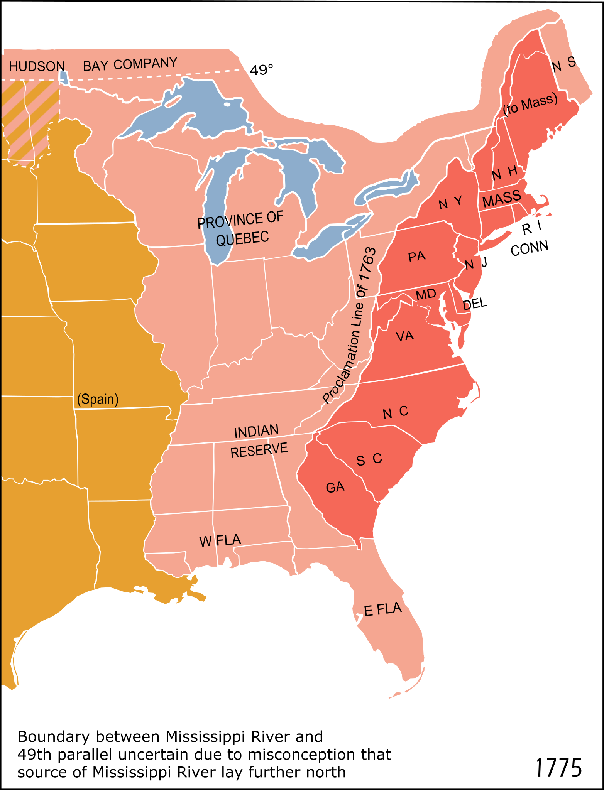

class: center, middle # Democracy during the French and American Revolutions *Theories of Democracy at Shoshin College* October 2024 --- # Age of Enlightenment --- # John Locke *Two Treatises of Government*, 1689 * Natural rights, rights to life, liberty, and property. * Government exists by the consent of the governed to protect those rights. --- # Montesquieu *The Spirit of the Laws*, 1748 * Separation of powers: executive, legislative, and judicial --- # Jean-Jacques Rousseau *The Social Contract*, 1762 * Give up freedom to get protection * Government as guide and agent for the people (general will) * Direct democracy, citizens actively participate in law-making and governance, inspired by the Athenian model --- # American Revolution United Colonies of North America Population: 2.5 million --- class: no-padding, center, middle  --- # Declaration of Independence > “We hold these truths to be self-evident: That all men are created equal; that they are endowed by their Creator with certain unalienable rights; that among these are life, liberty, and the pursuit of happiness; that, to secure these rights, governments are instituted among men, deriving their just powers from the consent of the governed;” > — Thomas Jefferson, 4 July 1776 --- # George Washington * Electors are independent and vote freely after deliberation. * Vice President was the candidate with the second-highest votes, even if from another party. * Twelfth Amendment in 1804 --- # Farewell Address 1. Unity among states 1. Against formation of political parties * Competing interests lead to factions * Undermine the government * Erode the rights and freedoms of citizens 1. Caution in foreign affairs * Avoid alliances with foreign countries 1. In favour of religion and morality 1. Against excessive public debt --- # Alexander Hamilton > “He was normally hostile to popular rule, which he condemned as a formula for ‘Tyranny’ and ‘deformity’ led by ‘an ungovernable mob’. Yet on one occasion, shortly after the Declaration of Independence, Hamilton denied that ‘instability is inherent in the nature of popular governments’. Such governments, he said, could be ‘happy, regular and durable’ if they took the form of ‘representative democracy, where the right of election is well secured and regulated and the exercise of the legislature, executive, and judiciary authorities is vested in select persons, chosen really and not nominally by the people” The Shortest History of Democracy, John Keane, 2022 *Source: “Alexander Hamilton to Gouverneur Morris, 19 May 1777, in Harold C. Syrett and Jacob E. Cooke (eds.), The Papers of Alexander Hamilton, Columbia University Press, New York, 1961, volume 1, pp. 254–56.”* --- # French Revolution * Population: 28 million * Direct democracy * Universal male suffrage --- # Timeline * 1789: Storming of the Bastille * 1791: Constitution of 1791 * 1792: Abolition of the Monarchy * 1793: Execution of Louis XVI * 1793: Reign of Terror * 1794: Fall of Robespierre * 1795: Constitution of 1795 --- # The Directory * Executive Branch * 5 Directors * Each year one would be replaced * Elected by electors * Legislative Branch * Council of 500 * Elected by electors * Lower house * Set-the-agenda power * Council of Ancients * Elected by electors * 250 members * Higher house * Final say power --- # Maximilien Robespierre * Popular sovereignty * Universal male suffrage * Direct democracy * General Will * Cult of the Supreme Being * Abolition of slavery --- # France after 1799 * Napoleon and First Empire (1799-1815) * Bourbon Restoration (1814-1830) * July Monarchy (1830-1848) * Second Republic (1848-1852) * Second Empire (1852-1870) * Third Republic (1870-1940) * Vichy France and Occupation (1940-1944) * Fourth Republic (1946-1958) * Fifth Republic (1958-Present) --- # Electors * Ancient Athenians' opinion * Washington's opinion * Hamilton's opinion * Robespierre's opinion --- # Thomas Paine On electoral democracy: * Diversity and disagreement * Representation (electors) promotes deliberation * No tyranny of the majority > It is impossible to conceive a system of government capable of acting over such an extent of territory, and such a circle of interests, as is immediately produced by the operation of representation. France, great and populous as it is, is but a spot in the capaciousness of the system. It is preferable to simple democracy even in small territories. **Athens, by representation, would have outrivalled her own democracy.** *Rights of Man*, 1791-1792 --- # Alexis de Tocqueville * Alexis de Tocqueville and Gustave de Beaumont * 9 months traveling the United States in 1831 * Sent by French gov to study the American prison system * Pretext to study American society instead --- # *Democracy in America* Published in 1835 and 1840 * Tyranny of the majority - majority oppressing minorities * Individualism - tendency to withdraw from public life * Self-interest and community - helping the community ultimately benefits the individual * Future global power * Geography * Population growth * Entrepreneurship and innovation --- # Books * *Democracy in America*, Alexis de Tocqueville, 1835-1840 * *Models of Democracy*, David Held, 1987 * *Washington: A Life*, Ron Chernow, 2010 * *Against Elections: The Case for Democracy*, David Van Reybrouck, 2013 * *The Shortest History of Democracy*, John Keane, 2022 * Letter of Thomas Jefferson to Samuel Kercheval, 12 July 1816 * Washington's Farewell Address, 1796